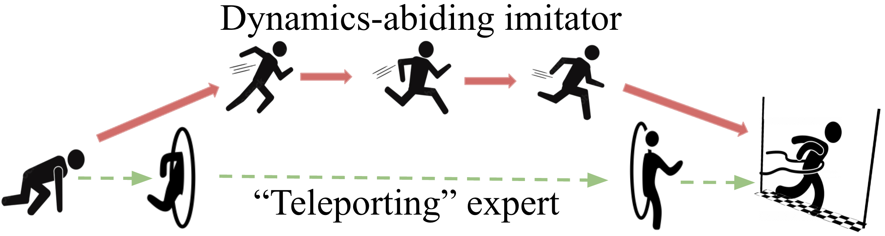
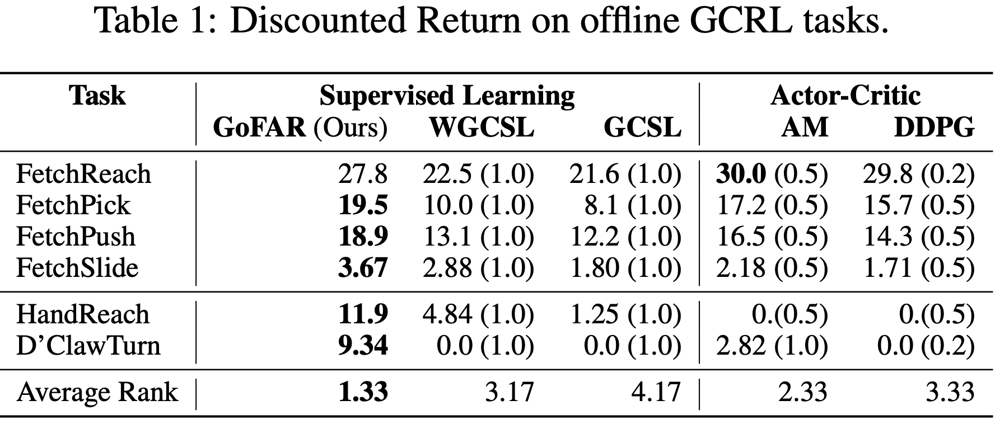

Goal-Conditioned F-Advantage Regression (GoFAR)
a novel regression- 4 based offline GCRL algorithm derived from a state-occupancy matching perspec- 5 tive; the key intuition is that the goal-reaching task can be formulated as a state- 6 occupancy matching problem between a dynamics-abiding imitator agent and an 7 expert agent that directly teleports to the goal (see Figure on the right.)
Leveraging this intuition, we pose a f-divergence regularized optimization problem over valid policy occupancy distributions. This optimization problem is difficult to solve; however, its dual problem is surprisingly simple and tractable. Therefore, we solve the dual problem and obtain the optimal (resp. converged) value function. A transformation of this optimal value function can be shown to be the optimal importance weights, using which we train the policy via supervised regression.


Uninterleaved Optimization
GoFAR does not train its policy until its value function has converged. This confers uninterleaved optimization that is more stable than prior actor-critic based methods in the offline setting. This feature enables GoFAR to obtain state-of-art performance on a variety of offline goal-conditioned continuous control tasks.
